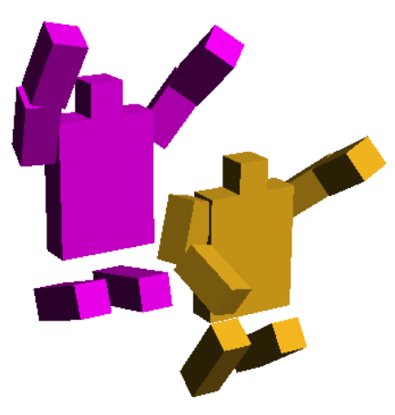

- Entirety
The planet, in its entirety
- The C Real-Time Raymarcher
 CRTRM - The C Real Time Ray Marcher. A path traced ray marcher that can render mathematical shapes in real time on the CPU. It can render unusual shapes like Voronoi shapes, fractals, and harmonic shapes.
CRTRM - The C Real Time Ray Marcher. A path traced ray marcher that can render mathematical shapes in real time on the CPU. It can render unusual shapes like Voronoi shapes, fractals, and harmonic shapes.
- 🐸 ClusterF
I vibed coded a distributed file store cluster. It hurt.
- 2D Optimiser
Optimisation algorithms demonstrated by redrawing famous pictures.
- Javascript Ray Marcher
Render scenes in your browser
Try the latest online demo , or the much faster C Real-Time RayMarcher.
- Digital Creatures
I move too often to own a fish tank.
- Stars and Ships
 A HTML5/Javascript/Processing engine for an unfinished game. This is a HTML5 canvas powered demo for a kind of space trading/management game. The demo show the ships moving to destinations. The graphics are all vector based, so it scales smoothly to any display size.
A HTML5/Javascript/Processing engine for an unfinished game. This is a HTML5 canvas powered demo for a kind of space trading/management game. The demo show the ships moving to destinations. The graphics are all vector based, so it scales smoothly to any display size.
- Might as well jump

A small racket scheme demo
- Throff
Throff is a dynamically typed, late binding, homoiconic, concatenative programming language.
- jsTemplate
Client-side web templates in Javascript
- Map Data Converters
Simple Data Converters
Converting map data between formats should be easy, but in practice, it's surprisingly complicated.
- Browser details
- Domain Scanner
Scan a range of domains
- Function Finder
Find functions by example in PLT Racket
- PanoViewer
- Pocket Bonsai
Digital Botany
- SPATH
Easy access to Racket nested data structures
- L-World
Virtual Worlds on your Mobile
- Oldphone
Old phone, new tricks
- Perl LiveObjects System
The worst parts of Perl, Self and SmallTalk mashed into one mindbending mess.
Also the largest known quine for Perl.
- VR VNC Viewer
View your desktop in Virtual Reality
- WhereAmI?
An android app that tells you where you are, and what is near you.